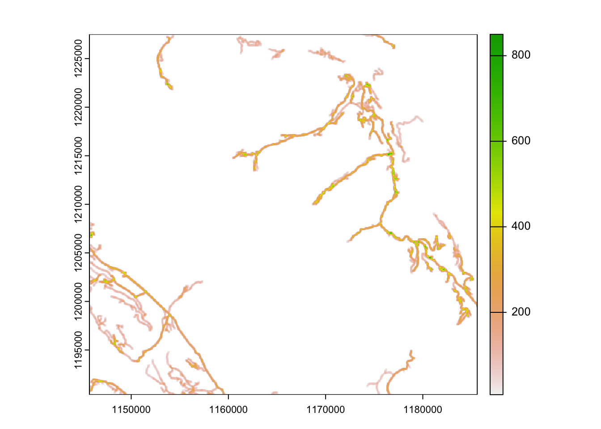

Processing Base Vector Data
Overview:
In this module we will post-process the vector data we prepared earlier to generate some additional covariates using the terra package. We will also prepare all data for the analysis. This includes
generating a road density layer
calculating distance to water metrics
converting our prepared vector to raster
building a raster stack with all covariate data
1. Calculate density of road network.
Often we want to post-process our raw vector data to create more meaningful covariates in our analysis. In this case we are interested in the density of roads and how this might impact our caribou habitat choice.
We can assume that the type of road will have a different impact on Caribou avoidance or predator use. We can assign a value based on the road type. In this case we will assign a higher value to roads used more frequently.
# read in roads
roads <- read_sf(file.path("clean_data", "roads.gpkg"))
# assign a value to the roads based on estimated speed of travel or use
roads <- roads %>%
mutate(rd_value = case_when(
ROAD_SURFACE == "loose" ~ 25,
ROAD_SURFACE == "overgrown" ~ 5,
ROAD_SURFACE == "rough" ~ 10,
ROAD_SURFACE == "unknown" ~ 7.5)) Now we can convert this to a raster using the template we created already
# convert roads to a raster
rroads <- rasterize(roads, template, field = "rd_value" )
plot(rroads)
As the impact of the roads is likely to impact a wider influence than a single pixal we can use a moving window analysis to expand the influence of roads for a given value.
# create a moving window
rrdens <- focal(rroads, w=9, fun="sum", na.rm=TRUE)
plot(rrdens)
writeRaster(rrdens, file.path("clean_data", "road_density.tif"), overwrite = TRUE) 2. Calculate distance from water
While density provides a measure of impact we may also be interested in capturing the distance of fixes to caribou points. In this case we will explore the distance to water bodies within the study areas.
# read in water
water <- read_sf(file.path("clean_data", "water.gpkg"))
# calculate the distance to water for each pixel in the raster
# be patient - this might take some time.
water_dis <- distance(template, water, unit = "km")
|---------|---------|---------|---------|
=========================================
plot(water_dis)
# what sort of values are we seeing?
range(water_dis)class : SpatRaster
dimensions : 1488, 1616, 2 (nrow, ncol, nlyr)
resolution : 25, 25 (x, y)
extent : 1145200, 1185600, 1190300, 1227500 (xmin, xmax, ymin, ymax)
coord. ref. : NAD83 / BC Albers (EPSG:3005)
source(s) : memory
names : range_min, range_max
min values : 0.000000, 0.000000
max values : 8.300147, 8.300147 [1] 0.000000e+00 8.354639e-05 1.793377e-04 3.220093e-04 4.024488e-04
[6] 4.224121e-04 5.609028e-04 5.714237e-04 6.075566e-04 6.288163e-04
[11] 6.344265e-04 6.564031e-04 7.123651e-04 7.503013e-04 7.557943e-04
[16] 7.702110e-04 7.889899e-04 8.578584e-04 8.730006e-04 8.744055e-04
[21] 8.839870e-04 8.920252e-04 1.009363e-03 1.033941e-03 1.045970e-03
[26] 1.053091e-03 1.054326e-03 1.055127e-03 1.098221e-03 1.140004e-03
[31] 1.147728e-03 1.172200e-03 1.244563e-03 1.271417e-03 1.299894e-03
[36] 1.304980e-03 1.333810e-03 1.335460e-03 1.353876e-03 1.373854e-03
[41] 1.377376e-03 1.412947e-03 1.415191e-03 1.427648e-03 1.489975e-03
[46] 1.490684e-03 1.507176e-03 1.509589e-03 1.544592e-03 1.548663e-03
[51] 1.562744e-03 1.581749e-03 1.600235e-03 1.603881e-03 1.619275e-03
[56] 1.696763e-03 1.697000e-03 1.711516e-03 1.726444e-03 1.732980e-03
[61] 1.749876e-03 1.751582e-03 1.758986e-03 1.771955e-03 1.777293e-03
[66] 1.784081e-03 1.797911e-03 1.798423e-03 1.816746e-03 1.824902e-03
[71] 1.828142e-03 1.830018e-03 1.863127e-03 1.883328e-03 1.908015e-03
[76] 1.942268e-03 1.946987e-03 1.958886e-03 1.965749e-03 1.994803e-03
[81] 2.017419e-03 2.023637e-03 2.038138e-03 2.059626e-03 2.072752e-03
[86] 2.083797e-03 2.095360e-03 2.137215e-03 2.157780e-03 2.165196e-03
[91] 2.184712e-03 2.193500e-03 2.195624e-03 2.199508e-03 2.200848e-03
[96] 2.207899e-03 2.228489e-03 2.229763e-03 2.233271e-03 2.243064e-03
[101] 2.243244e-03 2.257163e-03 2.265657e-03 2.268274e-03 2.276854e-03
[106] 2.281968e-03 2.282548e-03 2.294612e-03 2.300563e-03 2.319897e-03
[111] 2.326579e-03 2.356661e-03 2.366370e-03 2.373706e-03 2.391651e-03
[116] 2.401961e-03 2.407914e-03 2.419101e-03 2.440518e-03 2.447606e-03
[121] 2.462102e-03 2.466399e-03 2.472272e-03 2.475359e-03 2.492332e-03
[126] 2.509293e-03 2.515053e-03 2.519773e-03 2.525552e-03 2.532133e-03
[131] 2.552744e-03 2.566130e-03 2.569193e-03 2.579917e-03 2.594811e-03
[136] 2.604658e-03 2.604796e-03 2.621392e-03 2.632892e-03 2.638829e-03
[141] 2.644531e-03 2.651217e-03 2.653218e-03 2.658125e-03 2.658895e-03
[146] 2.662570e-03 2.663941e-03 2.690360e-03 2.692390e-03 2.699568e-03
[151] 2.714465e-03 2.716192e-03 2.725308e-03 2.734154e-03 2.736955e-03
[156] 2.747360e-03 2.747803e-03 2.752704e-03 2.767192e-03 2.771250e-03
[161] 2.771352e-03 2.783107e-03 2.790617e-03 2.791484e-03 2.817611e-03
[166] 2.820192e-03 2.838268e-03 2.845500e-03 2.849823e-03 2.868013e-03
[171] 2.868419e-03 2.874502e-03 2.874896e-03 2.880615e-03 2.889031e-03
[176] 2.893345e-03 2.895117e-03 2.903460e-03 2.951179e-03 2.970401e-03
[181] 2.985316e-03 2.993279e-03 2.997519e-03 2.997917e-03 3.002666e-03
[186] 3.006783e-03 3.007862e-03 3.010211e-03 3.018968e-03 3.023598e-03
[191] 3.035654e-03 3.041677e-03 3.063402e-03 3.063887e-03 3.064291e-03
[196] 3.069804e-03 3.080199e-03 3.090484e-03 3.111444e-03 3.111809e-03
[201] 3.113649e-03 3.122893e-03 3.124367e-03 3.125150e-03 3.128182e-03
[206] 3.136189e-03 3.142163e-03 3.144322e-03 3.147241e-03 3.148177e-03
[211] 3.156844e-03 3.169712e-03 3.194259e-03 3.199128e-03 3.202962e-03
[216] 3.222417e-03 3.240783e-03 3.241319e-03 3.243937e-03 3.246958e-03
[221] 3.252205e-03 3.255983e-03 3.270986e-03 3.277836e-03 3.279085e-03
[226] 3.302005e-03 3.310134e-03 3.318525e-03 3.330970e-03 3.336805e-03
[231] 3.342081e-03 3.347872e-03 3.353258e-03 3.359136e-03 3.365397e-03
[236] 3.371317e-03 3.378416e-03 3.383850e-03 3.388801e-03 3.394205e-03
[241] 3.417285e-03 3.420898e-03 3.433480e-03 3.434105e-03 3.437936e-03
[246] 3.459021e-03 3.462029e-03 3.470122e-03 3.479474e-03 3.486615e-03
[251] 3.493009e-03 3.493487e-03 3.507147e-03 3.515921e-03 3.538122e-03
[256] 3.540929e-03 3.546491e-03 3.547894e-03 3.556438e-03 3.562731e-03
[261] 3.584079e-03 3.588258e-03 3.590476e-03 3.613673e-03 3.622335e-03
[266] 3.625056e-03 3.659484e-03 3.664595e-03 3.670111e-03 3.673852e-03
[271] 3.678151e-03 3.684249e-03 3.696326e-03 3.703199e-03 3.716291e-03
[276] 3.726162e-03 3.726189e-03 3.726559e-03 3.732010e-03 3.733591e-03
[281] 3.736480e-03 3.739752e-03 3.747666e-03 3.757735e-03 3.766695e-03
[286] 3.782857e-03 3.797917e-03 3.798943e-03 3.799326e-03 3.812694e-03
[291] 3.820500e-03 3.821368e-03 3.834968e-03 3.850022e-03 3.854158e-03
[296] 3.855806e-03 3.860219e-03 3.861653e-03 3.862991e-03 3.865464e-03
[301] 3.867229e-03 3.870314e-03 3.875855e-03 3.886846e-03 3.889548e-03
[306] 3.893839e-03 3.897951e-03 3.900096e-03 3.910924e-03 3.914663e-03
[311] 3.916752e-03 3.920419e-03 3.921395e-03 3.929867e-03 3.929880e-03
[316] 3.930402e-03 3.933165e-03 3.933635e-03 3.954659e-03 3.959268e-03
[321] 3.960532e-03 3.964720e-03 3.971234e-03 3.973511e-03 3.981543e-03
[326] 3.983091e-03 3.983737e-03 3.987534e-03 3.996677e-03 3.997315e-03
[331] 4.009712e-03 4.010660e-03 4.014388e-03 4.014889e-03 4.034883e-03
[336] 4.038856e-03 4.042111e-03 4.050406e-03 4.071585e-03 4.074377e-03
[341] 4.077882e-03 4.091428e-03 4.092184e-03 4.101040e-03 4.101393e-03
[346] 4.102097e-03 4.109924e-03 4.120061e-03 4.126378e-03 4.129176e-03
[351] 4.129625e-03 4.129721e-03 4.139676e-03 4.170028e-03 4.170557e-03
[356] 4.171197e-03 4.172227e-03 4.184331e-03 4.188188e-03 4.206571e-03
[361] 4.206856e-03 4.208908e-03 4.210354e-03 4.227391e-03 4.235904e-03
[366] 4.237400e-03 4.260735e-03 4.265175e-03 4.278380e-03 4.283647e-03
[371] 4.286276e-03 4.299639e-03 4.306281e-03 4.307327e-03 4.320317e-03
[376] 4.326617e-03 4.328133e-03 4.330663e-03 4.340342e-03 4.343630e-03
[381] 4.359019e-03 4.372601e-03 4.375643e-03 4.388237e-03 4.389198e-03
[386] 4.407658e-03 4.411906e-03 4.412936e-03 4.415641e-03 4.416461e-03
[391] 4.420811e-03 4.430859e-03 4.431489e-03 4.432926e-03 4.442103e-03
[396] 4.443537e-03 4.444556e-03 4.448439e-03 4.452714e-03 4.462208e-03
[401] 4.474372e-03 4.474574e-03 4.486140e-03 4.491237e-03 4.493072e-03
[406] 4.493891e-03 4.499716e-03 4.499903e-03 4.501368e-03 4.525541e-03
[411] 4.539310e-03 4.544459e-03 4.550125e-03 4.569006e-03 4.571772e-03
[416] 4.580308e-03 4.580466e-03 4.591896e-03 4.595098e-03 4.629865e-03
[421] 4.632274e-03 4.633439e-03 4.637526e-03 4.640692e-03 4.654033e-03
[426] 4.664715e-03 4.665893e-03 4.668765e-03 4.674487e-03 4.677483e-03
[431] 4.681605e-03 4.687017e-03 4.687048e-03 4.694230e-03 4.701868e-03
[436] 4.702362e-03 4.702479e-03 4.708167e-03 4.716630e-03 4.721616e-03
[441] 4.737822e-03 4.754409e-03 4.754991e-03 4.755112e-03 4.757641e-03
[446] 4.772763e-03 4.779536e-03 4.788908e-03 4.798245e-03 4.804099e-03
[451] 4.812589e-03 4.816322e-03 4.817939e-03 4.829073e-03 4.829959e-03
[456] 4.846631e-03 4.864753e-03 4.865155e-03 4.875025e-03 4.875500e-03
[461] 4.883371e-03 4.886790e-03 4.921058e-03 4.921883e-03 4.926136e-03
[466] 4.931444e-03 4.931534e-03 4.934348e-03 4.935194e-03 4.946282e-03
[471] 4.946850e-03 4.962570e-03 4.963935e-03 4.964760e-03 4.977622e-03
[476] 4.989801e-03 4.995859e-03 5.000693e-03 5.002676e-03 5.003470e-03
[481] 5.005444e-03 5.006569e-03 5.007010e-03 5.016636e-03 5.018864e-03
[486] 5.023911e-03 5.028331e-03 5.033630e-03 5.042306e-03 5.053342e-03
[491] 5.054466e-03 5.063227e-03 5.075914e-03 5.080303e-03 5.084856e-03
[496] 5.086594e-03 5.092584e-03 5.104422e-03 5.107407e-03 5.116234e-03
[501] 5.119938e-03 5.127084e-03 5.132095e-03 5.135058e-03 5.138009e-03
[506] 5.145247e-03 5.147774e-03 5.154867e-03 5.156467e-03 5.156498e-03
[511] 5.167759e-03 5.172478e-03 5.172593e-03 5.192407e-03 5.192771e-03
[516] 5.201498e-03 5.207882e-03 5.233647e-03 5.242128e-03 5.248218e-03
[521] 5.249958e-03 5.251565e-03 5.252594e-03 5.253464e-03 5.256126e-03
[526] 5.263123e-03 5.269066e-03 5.271495e-03 5.272617e-03 5.273448e-03
[531] 5.279970e-03 5.288764e-03 5.293299e-03 5.294304e-03 5.305228e-03
[536] 5.305794e-03 5.316781e-03 5.317245e-03 5.326781e-03 5.338802e-03
[541] 5.355155e-03 5.359647e-03 5.361585e-03 5.365754e-03 5.372943e-03
[546] 5.376568e-03 5.378194e-03 5.386397e-03 5.395164e-03 5.410261e-03
[551] 5.415049e-03 5.419007e-03 5.420604e-03 5.421561e-03 5.434080e-03
[556] 5.438715e-03 5.455568e-03 5.457534e-03 5.459840e-03 5.486379e-03
[561] 5.497892e-03 5.502652e-03 5.502828e-03 5.504778e-03 5.509835e-03
[566] 5.516308e-03 5.528804e-03 5.529845e-03 5.531652e-03 5.542693e-03
[571] 5.543705e-03 5.547208e-03 5.548225e-03 5.549682e-03 5.550677e-03
[576] 5.553966e-03 5.554029e-03 5.557330e-03 5.573477e-03 5.586591e-03
[581] 5.594544e-03 5.596005e-03 5.598295e-03 5.603531e-03 5.611717e-03
[586] 5.619624e-03 5.621065e-03 5.628705e-03 5.629540e-03 5.635641e-03
[591] 5.636159e-03 5.638487e-03 5.642061e-03 5.644220e-03 5.646539e-03
[596] 5.653770e-03 5.656074e-03 5.656178e-03 5.660141e-03 5.667342e-03
[601] 5.679695e-03 5.687433e-03 5.691241e-03 5.692591e-03 5.694889e-03
[606] 5.696151e-03 5.700014e-03 5.702405e-03 5.702750e-03 5.703097e-03
[611] 5.724378e-03 5.726828e-03 5.736788e-03 5.745819e-03 5.753113e-03
[616] 5.760085e-03 5.761195e-03 5.763487e-03 5.800370e-03 5.808646e-03
[621] 5.811319e-03 5.816583e-03 5.825194e-03 5.832552e-03 5.836536e-03
[626] 5.838528e-03 5.838925e-03 5.840812e-03 5.843527e-03 5.847588e-03
[631] 5.854760e-03 5.855551e-03 5.863455e-03 5.875914e-03 5.887930e-03
[636] 5.890769e-03 5.903275e-03 5.903594e-03 5.904011e-03 5.906464e-03
[641] 5.911570e-03 5.919014e-03 5.924008e-03 5.929692e-03 5.929719e-03
[646] 5.932041e-03 5.941347e-03 5.948219e-03 5.956917e-03 5.967609e-03
[651] 5.968280e-03 5.972148e-03 5.979448e-03 5.988307e-03 5.993519e-03
[656] 5.995633e-03 6.009366e-03 6.009944e-03 6.019413e-03 6.024152e-03
[661] 6.026232e-03 6.033057e-03 6.035777e-03 6.037608e-03 6.040878e-03
[666] 6.043685e-03 6.058144e-03 6.064370e-03 6.068721e-03 6.072079e-03
[671] 6.074250e-03 6.077855e-03 6.079600e-03 6.079886e-03 6.086333e-03
[676] 6.089765e-03 6.109800e-03 6.111919e-03 6.117663e-03 6.120467e-03
[681] 6.121373e-03 6.122090e-03 6.125359e-03 6.128663e-03 6.131502e-03
[686] 6.131809e-03 6.135002e-03 6.135716e-03 6.145981e-03 6.146111e-03
[691] 6.146616e-03 6.152522e-03 6.153142e-03 6.160240e-03 6.160823e-03
[696] 6.166398e-03 6.173531e-03 6.181670e-03 6.182679e-03 6.185501e-03
[701] 6.198459e-03 6.207820e-03 6.213552e-03 6.215717e-03 6.216397e-03
[706] 6.222170e-03 6.225450e-03 6.227248e-03 6.230736e-03 6.233973e-03
[711] 6.239352e-03 6.261736e-03 6.267179e-03 6.293642e-03 6.303046e-03
[716] 6.308030e-03 6.308450e-03 6.309780e-03 6.313276e-03 6.321679e-03
[721] 6.325931e-03 6.333675e-03 6.336632e-03 6.337793e-03 6.339010e-03
[726] 6.339742e-03 6.341742e-03 6.344625e-03 6.346180e-03 6.348110e-03
[731] 6.353173e-03 6.362796e-03 6.369266e-03 6.370257e-03 6.371161e-03
[736] 6.379339e-03 6.388196e-03 6.390939e-03 6.402470e-03 6.405701e-03
[741] 6.414791e-03 6.421667e-03 6.425545e-03 6.432177e-03 6.434633e-03
[746] 6.435975e-03 6.446992e-03 6.448525e-03 6.451143e-03 6.457796e-03
[751] 6.460698e-03 6.465472e-03 6.469784e-03 6.470558e-03 6.478557e-03
[756] 6.482097e-03 6.490151e-03 6.499970e-03 6.502250e-03 6.503422e-03
[761] 6.505117e-03 6.512472e-03 6.518337e-03 6.518882e-03 6.519480e-03
[766] 6.523834e-03 6.528698e-03 6.537941e-03 6.540419e-03 6.544824e-03
[771] 6.546601e-03 6.549276e-03 6.551261e-03 6.553332e-03 6.566197e-03
[776] 6.567777e-03 6.570223e-03 6.570261e-03 6.570650e-03 6.571472e-03
[781] 6.575019e-03 6.575850e-03 6.584042e-03 6.585859e-03 6.591674e-03
[786] 6.593350e-03 6.596046e-03 6.597836e-03 6.615148e-03 6.631314e-03
[791] 6.632460e-03 6.639149e-03 6.639655e-03 6.641649e-03 6.642952e-03
[796] 6.650245e-03 6.650335e-03 6.655581e-03 6.661900e-03 6.670139e-03
[801] 6.680212e-03 6.689814e-03 6.694441e-03 6.700264e-03 6.703687e-03
[806] 6.705405e-03 6.705588e-03 6.711568e-03 6.717603e-03 6.719842e-03
[811] 6.726440e-03 6.728682e-03 6.740810e-03 6.755425e-03 6.756204e-03
[816] 6.772967e-03 6.784129e-03 6.791321e-03 6.794375e-03 6.799471e-03
[821] 6.800284e-03 6.805160e-03 6.810341e-03 6.812335e-03 6.818400e-03
[826] 6.820041e-03 6.821388e-03 6.825063e-03 6.846836e-03 6.847765e-03
[831] 6.852849e-03 6.856924e-03 6.862610e-03 6.862668e-03 6.879293e-03
[836] 6.881389e-03 6.885650e-03 6.891680e-03 6.895520e-03 6.900134e-03
[841] 6.906680e-03 6.906979e-03 6.914652e-03 6.915172e-03 6.917122e-03
[846] 6.917592e-03 6.918726e-03 6.936038e-03 6.936902e-03 6.936945e-03
[851] 6.938281e-03 6.938419e-03 6.954272e-03 6.961605e-03 6.967464e-03
[856] 6.968449e-03 6.973530e-03 6.987675e-03 6.988432e-03 6.991744e-03
[861] 6.993030e-03 6.997985e-03 7.002068e-03 7.006521e-03 7.020000e-03
[866] 7.025589e-03 7.027044e-03 7.042377e-03 7.046225e-03 7.056717e-03
[871] 7.057602e-03 7.061737e-03 7.062236e-03 7.063946e-03 7.065564e-03
[876] 7.071559e-03 7.071817e-03 7.078636e-03 7.080037e-03 7.092354e-03
[881] 7.095065e-03 7.096544e-03 7.103163e-03 7.103922e-03 7.108508e-03
[886] 7.119262e-03 7.126635e-03 7.128815e-03 7.137040e-03 7.147906e-03
[891] 7.155420e-03 7.174085e-03 7.175783e-03 7.187558e-03 7.189155e-03
[896] 7.191035e-03 7.197557e-03 7.202090e-03 7.208076e-03 7.208381e-03
[901] 7.213772e-03 7.228349e-03 7.231527e-03 7.232217e-03 7.233614e-03
[906] 7.235598e-03 7.243967e-03 7.244984e-03 7.256360e-03 7.271464e-03
[911] 7.276991e-03 7.277210e-03 7.283058e-03 7.291282e-03 7.300223e-03
[916] 7.307113e-03 7.311529e-03 7.316802e-03 7.319237e-03 7.340081e-03
[921] 7.340439e-03 7.342483e-03 7.346702e-03 7.346936e-03 7.347403e-03
[926] 7.382062e-03 7.385380e-03 7.386048e-03 7.390494e-03 7.399022e-03
[931] 7.399154e-03 7.409632e-03 7.413118e-03 7.416084e-03 7.427206e-03
[936] 7.429620e-03 7.442337e-03 7.451181e-03 7.453462e-03 7.454029e-03
[941] 7.463462e-03 7.463603e-03 7.465653e-03 7.473028e-03 7.490374e-03
[946] 7.490666e-03 7.496219e-03 7.504434e-03 7.508024e-03 7.513508e-03
[951] 7.515179e-03 7.516536e-03 7.517366e-03 7.541369e-03 7.552679e-03
[956] 7.552778e-03 7.556866e-03 7.565245e-03 7.565560e-03 7.566417e-03
[961] 7.570643e-03 7.575738e-03 7.576890e-03 7.578585e-03 7.584605e-03
[966] 7.586912e-03 7.589987e-03 7.599528e-03 7.602529e-03 7.604165e-03
[971] 7.606094e-03 7.615647e-03 7.619632e-03 7.631057e-03 7.636951e-03
[976] 7.639892e-03 7.640367e-03 7.640839e-03 7.652645e-03 7.660468e-03
[981] 7.662504e-03 7.663872e-03 7.673625e-03 7.678838e-03 7.681175e-03
[986] 7.689035e-03 7.691654e-03 7.702696e-03 7.703207e-03 7.705329e-03
[991] 7.705458e-03 7.706295e-03 7.713302e-03 7.713857e-03 7.715643e-03
[996] 7.717300e-03 7.717619e-03 7.721444e-03 7.722438e-03 7.725941e-03
[ reached getOption("max.print") -- omitted 2398912 entries ][1] 0.000000 8.3001473. Convert base vector data to rasters
We can also convert each vector layer we extracted into a raster.
Note this can also be done at the vector stage, however predictive modelling will normally require a stacked covariate list so that you can predict from the built model
bec <- read_sf(file.path("clean_data","bec.gpkg"))
vri_cc <- read_sf(file.path("clean_data","vri_cc.gpkg"))
vri_conif <- read_sf(file.path("clean_data","vri_conif.gpkg"))
vri_ageclass <- read_sf(file.path("clean_data","vri_ageclass.gpkg"))
#water
#roads
#cutblocks
# convert to rasters
vri_cc <- rasterize(vri_cc, template, field = "cc_class" )
vri_conif <- rasterize(vri_conif, template, field = "conif" )
vri_ageclass <- rasterize(vri_ageclass, template, field = "age_class" )
# stack into a set of rasters
vect_stack <- c(vri_cc, vri_conif, vri_ageclass, water_dis, rrdens)Lets combine our already created rasters
4. Combine raster layers into a stack
# lets combine both the raster stack and the vector stack
all_stack <- c(vect_stack, rast_stack)
plot(all_stack)
# we can write this out as a tif (raster object)
#writeRaster(all_stack, file.path("clean_data", "rstack.tif"), overwrite = T)Or we can write this out to a very small R object